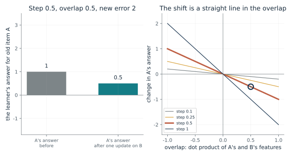
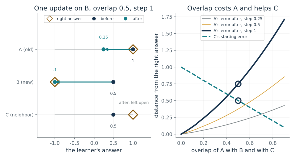
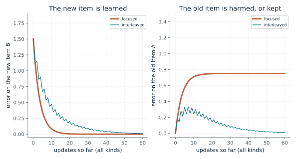
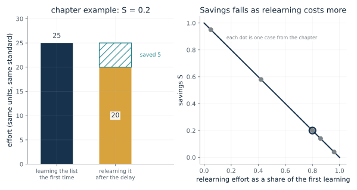
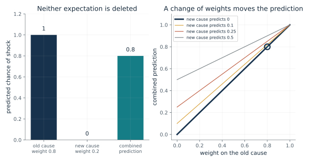

How far does one lesson on a new item shift an old answer?
From Chapter 7, A network that learned a second list lost the first
If a linear learner takes one update on a new item B, how far does its answer for an old item A move?
The update subtracts step x error x B's features from the weights. A's answer is the weights dotted with A's features, so the change in A's answer is that same subtraction dotted with A's features: step x error x the overlap of A and B, with a minus sign.
Predict first: The step is 0.5, the new item's error is 2 and the overlap is 0.5. Predict how far A's answer moves and in which direction.

Step size: 0.5 · Overlap of A and B: 0.5
What happens: A's answer moves by -0.5, a quarter of the new error of 2, in the opposite direction from the error. With an overlap of 0 it does not move at all, and with an overlap of -1 it moves up by 1.
One update on a new item whose error is 2, with step 0.5 and overlap 0.5, moves A's answer from 1 to 0.5, a change of -0.5. With an overlap of 0 the change would be 0. This is a linear learner and one step, and a change is not yet forgetting.
- A's answer before
- 1
- A's answer after
- 0.5
- Change in A's answer
- -0.5
- Change as a share of the new error
- -0.25
This is the smallest picture of how learning one thing can disturb another: the same weights answer both, so a push on one item reaches the other through the features they share.
H.M. showed the trouble from the other side: he could not form new memories of the events of a day while much older knowledge stayed. The toy does not reproduce his condition, and the chapter does not say a brain updates by this rule.
In a network the same weights serve every item, so an update aimed at one item reaches the others through shared features. The identity is shown only for a linear learner and one step.
Show the calculation
Change = -step x error x overlap = -0.5 x 2 x (0.5) = -0.5. A real update of the weights gives the same -0.5.
The equations and symbols
- Delta y_A
- the change in the learner's answer for old item A
- eta
- the step size, how far one update moves the weights
- e_B
- the new item's error before the update: the learner's answer minus the right answer (2 here)
- x_A . x_B
- the overlap: the dot product of A's and B's feature lists, between -1 and 1 for unit-length lists
A linear learner, one gradient step on half the squared miss, and unit-length feature lists so that the dot product is the overlap. Nonlinear models and repeated updates can behave differently. A shift in A's answer is not forgetting until A's own target says the answer got worse.
Check your understanding: The step is 0.1 and the new error is 2. What is the change in A's answer when the overlap is 1, 0 and -1?
Book source: Chapter 7, A network that learned a second list lost the first. Illustration C07-D01. Formula. The chapter's toy linear learner and its derivation in the back matter, which the chapter says is its own toy and not taken from McClelland and colleagues. The two weights, the new-item error of 2 and the step sizes are made up. The chapter's numeric check is step 0.1, error 2 and overlaps 1, 0 and -1, giving changes of -0.2, 0 and 0.2.
What does overlap cost an old item and give a neighbor?
From Chapter 7, A network taught only about penguins damaged what it knew about other birds
A learner knows only A. One update teaches a new item B. How far is A pushed off its answer, and how much did sharing with A already help a neighbor C?
B's error before the update is o + 1, since the learner answers o and the right answer is -1. The update lowers every answer in proportion to its overlap with B, so A falls by eta x (1 + o) x o. C's head start is the same sharing, seen from the other side: it answers o without ever being taught.
Predict first: A shares half its features with B and with C, and one update teaches B exactly. Predict A's answer afterward and C's error before the update.

Overlap of A with B and with C: 0.5 · Step size: 1.0
What happens: A's answer drops from 1 to 0.25, an error of 0.75. C already answers 0.5, an error of 0.5 instead of 1, because it shares half of A. With an overlap of 0, A is untouched but C gets no help from A.
At overlap 0.5 and step 1, one update on B moves A's answer from 1 to 0.25, an error of 0.75. C starts 0.5 from its right answer, not 1, because it shares with A. C's change after the update is left open, as in the chapter.
- A's answer after
- 0.25
- A's error after
- 0.75
- C's answer before any update
- 0.5
- C's error before any update
- 0.5
Keeping overlap low protects old answers but leaves items unable to teach each other. That is the trade behind mixing examples and behind the proposal that two memory systems code overlap differently.
McClelland and colleagues cite recordings in which fewer hippocampal cells fire than cells in the area feeding them. Sparse codes could let similar situations overlap little, with the neocortex as the slow learner that uses overlap. The paper marks this as a proposal, and the toy does not test it.
As McClelland and colleagues report French's 1991 work, keeping overlap low reduces interference, at the cost of 'a dramatic reduction in the exploitation of shared structure'. The toy shows the trade in one step for three constructed items.
Show the calculation
B's error before = 0.5 + 1 = 1.5. A's answer after = 1 - 1 x 1.5 x 0.5 = 0.25. C's starting answer = 0.5, so its error is 1 - 0.5 = 0.5.
The equations and symbols
- o
- the overlap of A with B and also of A with C (the chapter sets both to 0.5)
- eta
- the step size; 1 is just far enough to answer -1 for B
- 1 + o
- B's error before the update: the learner answers o and the right answer is -1
- y_C
- the learner's answer for C, whose right answer is 1
A linear learner with unit-length feature lists whose weights start equal to A's features. C's answer after the update is not computed, because it depends on how C and B overlap and the chapter leaves that open. Steps below 1 leave B only partly learned.
Check your understanding: The overlap is 0.5 and the step is 1. What are A's answer and B's answer after the update?
Book source: Chapter 7, A network taught only about penguins damaged what it knew about other birds. Illustration C07-D02. Constructed example. The chapter's constructed three-item toy: A answers 1, B's right answer is -1, C follows A's rule, all feature lists have length 1 and both overlaps are 0.5, so A falls from 1 to one quarter. The other overlaps and step sizes are the companion's. Figure 7.1 in the chapter is the same picture. Constructed, not data.
What does mixing old examples in buy, and what does it cost?
From Chapter 7, A network taught only about penguins damaged what it knew about other birds
In a two-item toy, what happens to the old item A when the learner trains on the new item B alone, and what when old and new alternate?
With unit-length features each focused update on B shrinks B's error by the factor 1 - rate, and it drags A along by the overlap, so A ends off by overlap x (1 + overlap). Alternating updates are a projection method: they settle at the one weight list that answers both items exactly, which exists whenever the two feature lists differ.
Predict first: Predict, for overlap 0.5 and rate 0.25, which schedule leaves A with the smaller error after 40 updates and which gets B below an error of 0.1 sooner.

Training schedule: focused · Overlap of A and B: 0.5 · Rate: 0.25
What happens: Focused training gets B under 0.1 after 10 updates but leaves A off by 0.75. Interleaved training takes 27 updates to get B under 0.1, and A's error is only 0.037 after 40 updates. Faster for the new item, worse for the old one.
In this two-item toy with overlap 0.5 and rate 0.25, focused training: B is learned fast and A is left with an error of 0.75. It is a companion toy for the trade in the penguin network, not a copy of that network.
- B error after 40 updates
- 1.51e-05
- A error after 40 updates
- 0.75
- Updates until B error is under 0.1
- 10
- Largest A error in 60 updates
- 0.75
This is the same trade the chapter reports for the penguin network, with the cost named: slower learning of each new fact and a person or process to choose the old examples to mix in.
The two-store proposal suggests that renewed activity from past events could give a slow learner mixed examples. Wilson and McNaughton found that pairs of cells that fired together awake fired together more in later sleep, and the 2010 ripple study cut ripples short; neither shows replay teaching a slow system.
McClelland and colleagues report that focused penguin training learned the new facts much more rapidly but treated all animals as swimmers that cannot fly, while mixed teaching was slower and caused very little harm. This toy only echoes that contrast.
Show the calculation
Each update subtracts rate x error x the item's features from the weights. Focused, with unit-length features, shrinks B's error by (1 - 0.25) each update and leaves A at 0.75 off in the limit. Interleaved settles at the weights that answer both exactly.
The equations and symbols
- w
- the learner's weights
- x_i, y_i
- the features and right answer of the item being trained on, A or B
- eta
- the step size, called the rate here
- overlap
- the dot product of A's and B's features, as in the previous card
A linear learner with unit-length features that starts exactly right on A. Focused training updates only on B. Interleaved training alternates B and A, so half its updates go to the old item and its progress is counted in updates of every kind. The chapter's network is nonlinear and far larger.
Check your understanding: With overlap 0.5 and rate 1, how far off is A after a single focused update on B, and after enough interleaved updates?
Book source: Chapter 7, A network taught only about penguins damaged what it knew about other birds. Illustration C07-D03. Simulation. A companion toy that uses the same A and B as the previous card to mimic the chapter's contrast between focused and interleaved training. The chapter reports McClelland and colleagues' penguin network in words only, with no numbers, so none of its results are reproduced. The overlaps, rates and the 60 updates are made up and nothing is random.
How much of the first effort did relearning save?
From Chapter 7, Forgotten lists were still relearned faster
If learning took one amount of effort and relearning took another, what share of the first effort was saved?
The numerator is the effort relearning did not need, L0 minus Lt. Dividing by L0 turns it into a share of the first effort: 0 when relearning takes as long as learning did, 1 when it takes none.
Predict first: Learning a list took 25 repetitions and relearning it took 20. Predict the savings, and then the savings for a failed model that recovers with one twentieth of the original training.

Case: chapter example · Effort of the first learning: 25
What happens: Five of 25 repetitions were saved, so S = 0.2. The one-twentieth model would have S = 0.95. The reported values on this card are Ebbinghaus's 0.58 and 0.21 and Murre and Dros's 0.04 and 0.14.
With a first learning effort of 25, savings of 0.2 means relearning takes 20, so 5 of the first effort is saved. For the reported savings values, the efforts are the companion's scaling, not data.
- Savings S
- 0.2
- Effort to learn first time
- 25
- Effort to relearn
- 20
- Effort saved
- 5
A system that fails an exact-answer test may still be quick to restore. Savings asks how much of the first effort survived, which a recall test alone does not.
Ebbinghaus tested only himself, in 163 double tests in 1879 and 1880. Murre and Dros repeated the work with one subject, the second author, concluded the curve was replicated, and found far lower 31-day savings: about 0.04, or about 0.14 adjusted for a rise in learning time.
French's review reports that Hetherington and Seidenberg applied a savings measure to networks and found that a network that seemed to have forgotten could often be retrained quickly, though later work showed not all catastrophic forgetting is this shallow. No figures are given.
Show the calculation
S = (L0 - Lt) / L0 = (25 - 20) / 25 = 0.2. Equivalently Lt = L0 x (1 - S) = 25 x 0.8 = 20.
The equations and symbols
- S(t)
- savings after a delay t: the share of the first learning effort that relearning saved
- L_0
- the effort to learn the list the first time
- L_t
- the effort to relearn it after the delay, on the same material and the same stopping standard
Both efforts are in the same units, on the same material and with the same stopping standard. The six cases are separate points and not a forgetting curve; the chapter gives only two of Ebbinghaus's values, so nothing is drawn between them. The one-twentieth model is the chapter's illustration, not a reported result. Savings alone does not show what a model's weights retain.
Check your understanding: A failed model recovers with one twentieth of its original training. What are the savings?
Book source: Chapter 7, Forgotten lists were still relearned faster. Illustration C07-D04. Formula. The chapter's savings formula and worked example (25 repetitions, 20 on relearning). Ebbinghaus's 0.58 after minutes and 0.21 after a month, Murre and Dros's one-subject 31-day savings of about 0.04 (about 0.14 adjusted) and the one-twentieth model are as the chapter reports them. Ebbinghaus used his own formula, not the plain ratio, so the efforts shown for the reported savings are the companion's scaling to the chosen first effort, not data.
Can a prediction change without erasing an old expectation?
From Chapter 7, A quiet response can hide an older memory
If a learner keeps two expectations, one from the old cause and one from a new cause, how does the combined prediction move when the weights change?
The combined prediction is a weighted average of the two causes' own predictions. The weights are the learner's current belief about which cause is active, so a change of setting that shifts the belief shifts the average, and the causes' expectations are untouched.
Predict first: The old cause has weight 0.8 and predicts shock with probability 1; the new cause has weight 0.2 and predicts 0. Predict the combined prediction, and then what happens if the weights swap.

Weight on the old cause: 0.8 · New cause's chance of shock: 0
What happens: 0.8 x 1 + 0.2 x 0 = 0.8. With the weights swapped, 0.2 on the old cause, the prediction is 0.2. Neither expectation was deleted or changed, only the weights.
With weight 0.8 on the old cause, which predicts shock with probability 1, and 0.2 on a new cause that predicts 0, the combined prediction is 0.8. Changing the weights moves the prediction without changing either cause's own expectation. The weights are set by hand here, not inferred.
- Weight on the old cause
- 0.8
- Weight on the new cause
- 0.2
- Combined prediction
- 0.8
- New cause's own prediction
- 0
This is a different answer to interference from overwriting shared connections: keep competing predictions and let evidence about the situation weigh them. Renewal after extinction is the kind of result it is meant to fit.
Bouton and Bolles's rats suppressed activity and bar pressing for a cue paired with shock, the response fell when the cue came without shock in another setting, and it returned when the rats went back to the first setting. One interpretation is that extinction adds learning that competes with the original; the result does not prove two separate physical memories.
A machine could preserve competing predictions and use evidence about the situation to weigh them. The chapter calls this an analogy, not a result from the rat experiment.
Show the calculation
0.8 x 1 + 0.2 x 0 = 0.8.
The equations and symbols
- w_old, w_new
- the weights on the old and the new hidden cause, adding to 1
- p_old
- the old cause's chance of shock (1 here)
- p_new
- the new cause's chance of shock (0 in the chapter)
- p_hat
- the combined predicted chance of shock
Two causes with fixed expectations and weights set by hand. This is a model of inference, not a measurement of the rat's thoughts, and the example does not prove that two separate physical memories exist or that the old memory never changes.
Check your understanding: The old cause has weight 0.7 and predicts shock with probability 1. The new cause predicts 0.1. What is the combined prediction?
Book source: Chapter 7, A quiet response can hide an older memory. Illustration C07-D05. Constructed example. The chapter's constructed example of the latent-cause model's logic: weights 0.8 and 0.2, causes that predict shock with probabilities 1 and 0, and a combined prediction of 0.8. Gershman and colleagues' model infers the weights from the observations and their timing; here they are set by hand. The other values of the new cause's prediction are the companion's. Constructed, not data.
Mathematical illustrations use the book's formulas with disclosed small examples. Each interactive choice shows a result computed from the same calculations as the chapter notebook. A simulation is not a measurement, and for a brain the mathematics is a model: a picture illustrates a result, and the assumptions determine its scope. Review copy, brain-computer partnership revision of 1 november 2026.